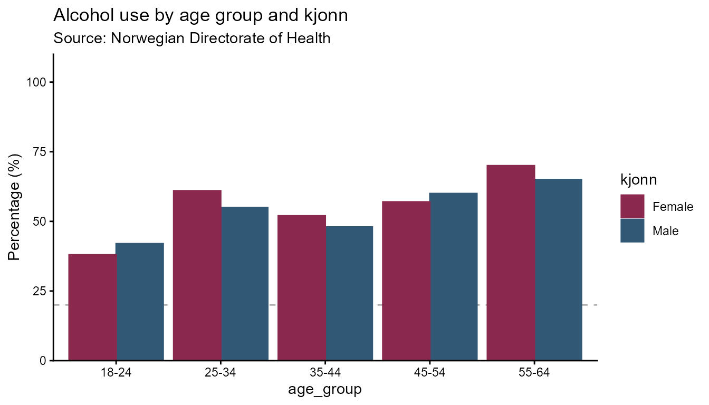
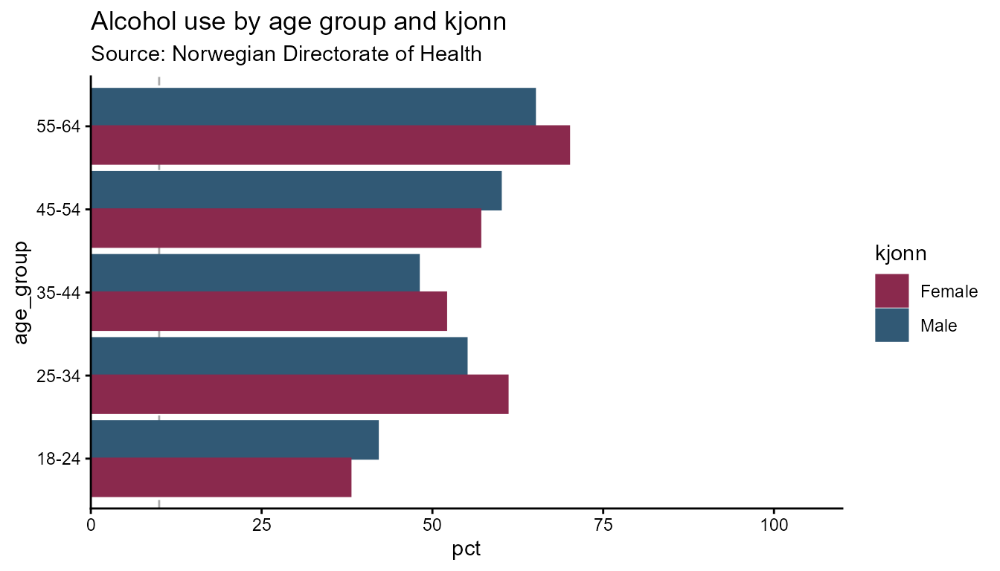
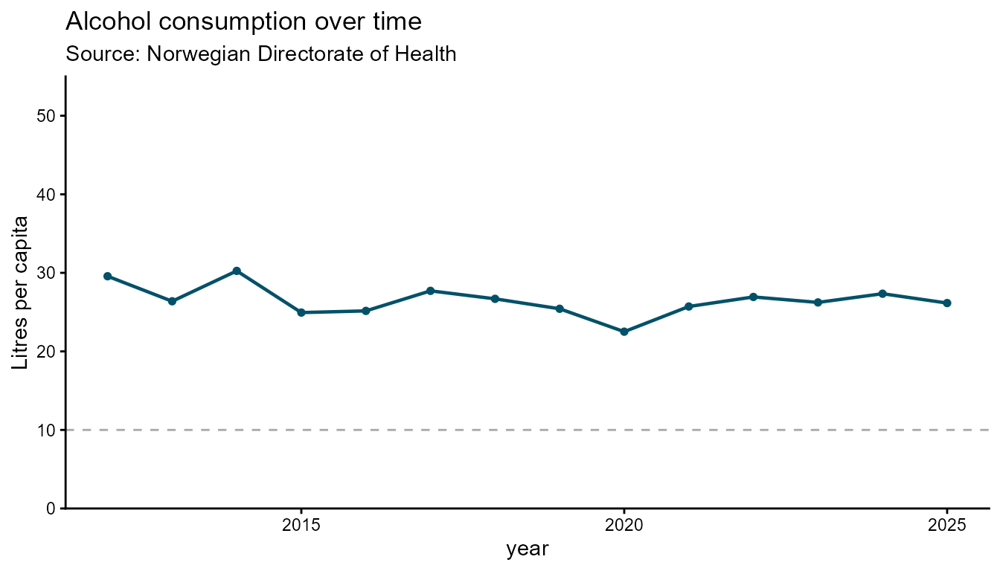
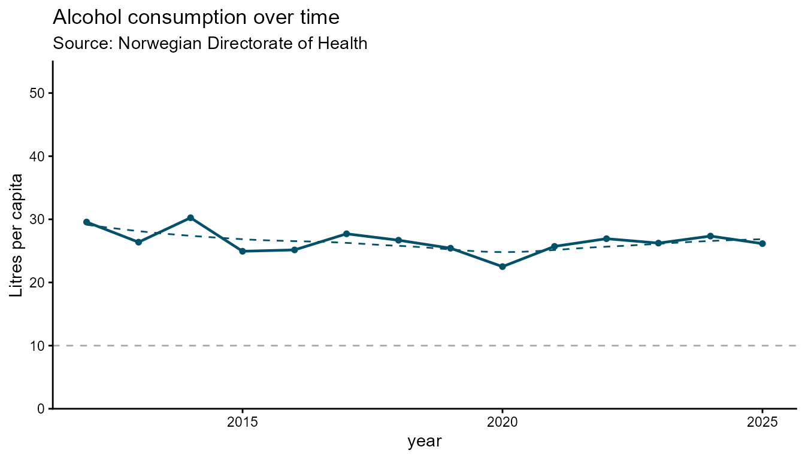
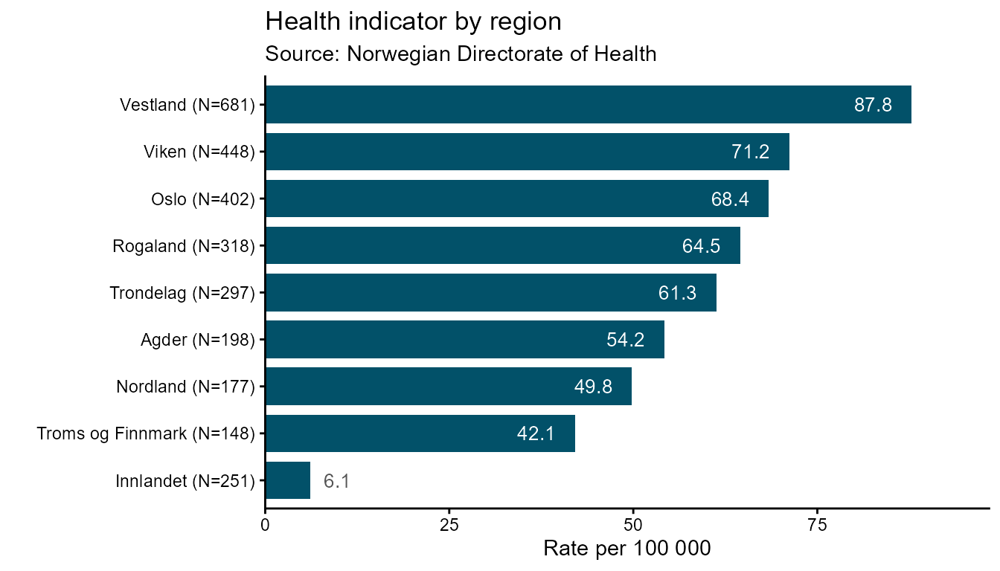
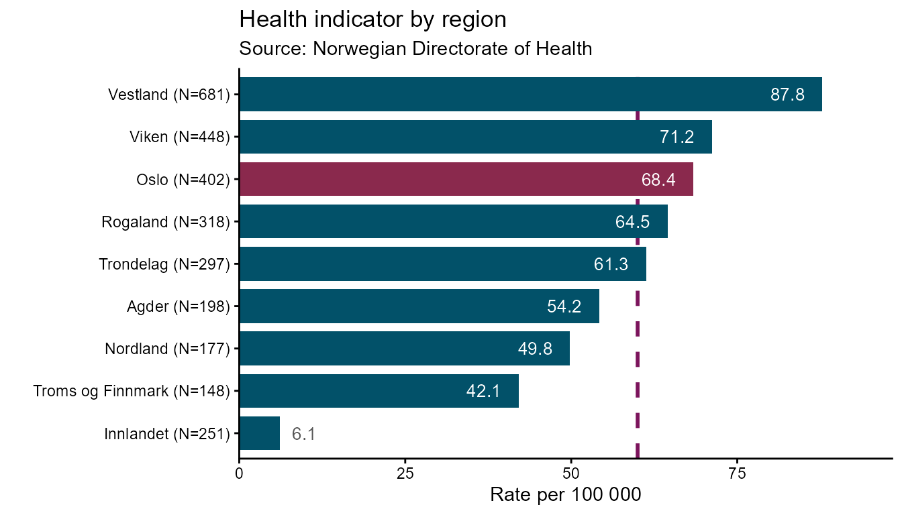
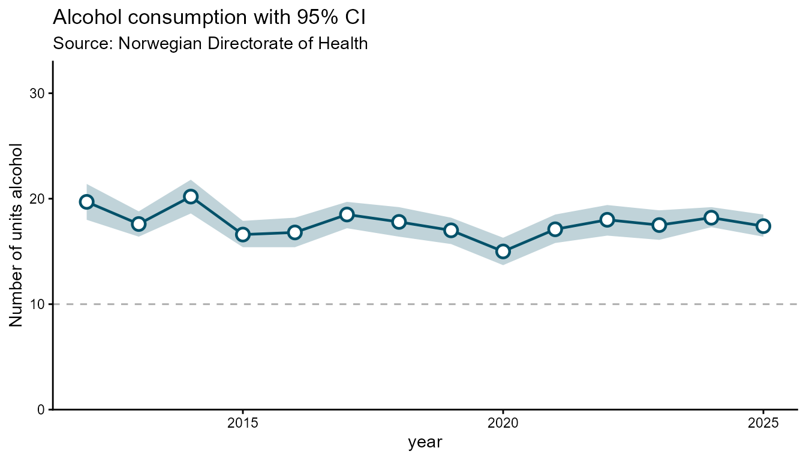

This vignette shows how to use each geometry in highdir. Every example follows the same two-step workflow:
-
hd_spec()— describe what the data means (columns, labels) -
hd_make()— decide how to render it (geom, backend, options)
The same hd_spec object can be passed to
hd_make() multiple times with different geom types,
backends, or hd_opts() objects — there is no need to
rebuild the spec.
library(highdir)
# ── Age-group survey dataset (bars and pie) ────────────────────────────────────
survey <- data.frame(
age_group = rep(c("18-24", "25-34", "35-44", "45-54", "55-64"), each = 2),
kjonn = rep(c("Male", "Female"), times = 5),
pct = c(42, 38, 55, 61, 48, 52, 60, 57, 65, 70),
n = c(120, 115, 200, 210, 180, 175, 160, 155, 140, 145)
)Column chart
Column charts are the default geometry and work with both grouped and
ungrouped data. The n column is shown in the highcharter
tooltip alongside the percentage.
spec_col <- hd_spec(survey,
x = "age_group",
y = "pct",
group = "kjonn",
n = "n")
opts_col <- hd_opts(
title = "Alcohol use by age group and kjonn",
subtitle = "Source: Norwegian Directorate of Health",
ylim = c(0, 100),
yint = 20,
ylab = "Percentage (%)"
)
## Alternatively using ggplot2 syntax
# hd(survey, x = "age_group", y = "pct", group = "kjonn", n = "n") +
# hd_opts(title = "Alcohol use by age group and kjonn",
# subtitle = "Source: Norwegian Directorate of Health",
# ylim = c(0, 100),
# yint = 20,
# ylab = "Percentage (%)") +
# hd_geom_column()Interactive figure
# Interactive (default)
hd_make(spec_col, "column", opts_col)
# alternatively
# hd(spec_col) + hd_geom_column() + hd_opts(opts_col)Static figure
# Static ggplot2
hd_make(spec_col, "column", opts_col, backend = "ggplot2")
Column with groups
# Horizontal bars — flip applies to both backends
opts_flip <- hd_opts(
title = "Alcohol use by age group and kjonn",
subtitle = "Source: Norwegian Directorate of Health",
ylim = c(0, 100),
flip = TRUE
)
hd_make(spec_col, "column", opts_flip)
hd_make(spec_col, "column", opts_flip, backend = "ggplot2")
Line chart
Line charts suit time-series data. Use smooth = TRUE
(default) for spline curves, or FALSE for straight segments
between points. dot_size controls the marker radius.
# ── Time-series dataset (single group) ────────────────────────────────────────
# Annual alcohol consumption estimate with 95 % confidence interval.
# data("alco1")
# ── Time-series dataset (kjonn groups) ──────────────────────────────────────────
# data("alco2")
# Single series — no group column
spec_line1 <- hd_spec(alco1,
x = "year",
y = "adj_mean"
)
opts_line <- hd_opts(
title = "Alcohol consumption over time",
subtitle = "Source: Norwegian Directorate of Health",
ylim = c(0, 50),
ylab = "Litres per capita"
)
# Straight segments
hd_make(spec_line1, "line", opts_line, smooth = FALSE)
hd_make(spec_line1, "line", opts_line, smooth = FALSE, backend = "ggplot2")
Interactive figure
# Spline (smooth) — default
hd_make(spec_line1, "line", opts_line)Static
# Spline (smooth) — default
hd_make(spec_line1, "line", opts_line, backend = "ggplot2")
# Grouped by kjonn
spec_line2 <- hd_spec(alco2,
x = "year",
y = "adj_mean",
group = "kjonn")
# Larger markers, straight lines
hd_make(spec_line2, "line", opts_line, smooth = FALSE, dot_size = 6)
hd_make(spec_line2, "line", opts_line, smooth = FALSE, dot_size = 6,
backend = "ggplot2")
# Highcharter only: custom per-group marker shapes
hd_make(spec_line2, "line", opts_line,
line_symbols = c("circle", "square"))Ranked bar chart
A ranked bar chart sorts bars by value so comparisons across
categories are immediate. Use ranked_bar when the order of
categories matters more than their nominal labels - for example, ranking
regions by a health indicator.
Automatic label placement is one of the key features of this geom. In the ggplot2 backend, value labels are placed inside a bar when the bar is long enough to fit the text, and outside when the bar is too short. The cut-off is calculated per bar from the label character width relative to the axis range, so the placement is fully automatic — no manual threshold is needed.
# Regional health indicator dataset
regions <- data.frame(
region = c("Oslo", "Viken", "Vestland", "Rogaland",
"Trondelag", "Innlandet", "Agder",
"Nordland", "Troms og Finnmark"),
rate = c(68.4, 71.2, 87.8, 64.5, 61.3, 6.1, 54.2, 49.8, 42.1),
n = c(402, 448, 681, 318, 297, 251, 198, 177, 148)
)
spec_rb <- hd_spec(regions,
x = "region",
y = "rate",
n = "n")
opts_rb <- hd_opts(
title = "Health indicator by region",
subtitle = "Source: Norwegian Directorate of Health",
ylab = "Rate per 100 000",
flip = TRUE
)
# Static ggplot2 — value labels placed inside or outside bars automatically
hd_make(spec_rb, "ranked_bar", opts_rb, backend = "ggplot2")
# Interactive — default ascending order (lowest bar at bottom)
hd_make(spec_rb, "ranked_bar", opts_rb)Pass ascending = FALSE to flip the sort order so the
highest-ranked category appears at the top:
hd_make(spec_rb, "ranked_bar", opts_rb, ascending = FALSE)
hd_make(spec_rb, "ranked_bar", opts_rb, ascending = FALSE, backend = "ggplot2")Use aim to draw a dashed reference line at a target
value. The line is drawn in a contrasting brand colour so it reads
clearly against the bars:
# Draw a dashed target line at rate = 60
hd_make(spec_rb, "ranked_bar", opts_rb, aim = 60, backend = "ggplot2")
# Draw a dashed target line at rate = 60
hd_make(spec_rb, "ranked_bar", opts_rb, aim = 60)Use vs to highlight one specific category with a
contrasting fill colour. The argument accepts a partial string match
against the x column, so vs = "Oslo" will
match "Oslo" exactly, and vs = "Troms" would
match "Troms og Finnmark":
# Highlight Oslo as the comparison reference
hd_make(spec_rb, "ranked_bar", opts_rb, vs = "Oslo")
hd_make(spec_rb, "ranked_bar", opts_rb, vs = "Oslo", backend = "ggplot2")
# Combine: descending order + target line + comparison highlight
hd_make(spec_rb, "ranked_bar", opts_rb,
ascending = FALSE,
aim = 60,
vs = "Oslo")
hd_make(spec_rb, "ranked_bar", opts_rb,
ascending = TRUE,
aim = 60,
vs = "Oslo",
backend = "ggplot2")
The n column in hd_spec() appends sample
sizes to category labels in the ggplot2 backend
("Oslo (N=502)") and shows them in the highcharter tooltip.
Omit n from hd_spec() if you do not want
sample sizes displayed:
Arearange chart
Arearange is designed for displaying a central estimate alongside a
confidence interval or min/max band. ymin and
ymax are required — they name the columns
that define the lower and upper bounds of the shaded band.
# Single series
spec_ar1 <- hd_spec(alco1,
x = "year",
y = "adj_enhet")
opts_ar <- hd_opts(
title = "Alcohol consumption with 95% CI",
subtitle = "Source: Norwegian Directorate of Health",
ylim = c(0, 30),
ylab = "Number of units alcohol"
)Interactive
hd_make(spec_ar1, "arearange", opts_ar,
ymin = "lower_enhet", ymax = "upper_enhet")Static
hd_make(spec_ar1, "arearange", opts_ar,
ymin = "lower_enhet", ymax = "upper_enhet", backend = "ggplot2")
# Grouped by kjonn
spec_ar2 <- hd_spec(alco2,
x = "year",
y = "adj_enhet",
group = "kjonn")
hd_make(spec_ar2, "arearange", opts_ar,
ymin = "lower_enhet", ymax = "upper_enhet")
hd_make(spec_ar2, "arearange", opts_ar,
ymin = "lower_95CI", ymax = "upper_95CI", backend = "ggplot2")Pie chart
Pie charts map one categorical column to slice labels and one numeric
column to slice values. Pass inner_size = "50%" (or any CSS
percentage) to draw a donut chart. The group column is
ignored for pie charts — use x for labels and
y for values.
# Category share dataset (pie)
drinking_freq <- data.frame(
category = c("Never", "Rarely", "Monthly", "Weekly", "Daily"),
pct = c(18, 25, 30, 20, 7))
spec_pie <- hd_spec(drinking_freq,
x = "category",
y = "pct")
opts_pie <- hd_opts(
title = "Drinking frequency",
subtitle = "Source: Norwegian Directorate of Health",
ylab = "Share (%)"
)Stacked column chart
Stacked column charts display multiple series grouped into named stacks. Each stack is a separate pile of bars; series that share the same stack accumulate on top of each other.
The data must be in long format with one row per
(x, group, stack) combination:
-
x— the category axis (e.g. medal type) -
y— the numeric value -
group— the series label shown in the legend (e.g. country) -
stack— the column that assigns rows to a stack group (e.g. continent)
stack is a required argument passed via
... in hd_make().
# Olympics all-time medal table
olympics <- data.frame(
Country = c("Norway", "Norway", "Norway",
"Germany", "Germany", "Germany",
"United States", "United States", "United States",
"Canada", "Canada", "Canada"),
Continent = c("Europe", "Europe", "Europe",
"Europe", "Europe", "Europe",
"North America", "North America", "North America",
"North America", "North America", "North America"),
Medal = rep(c("Gold", "Silver", "Bronze"), times = 4),
Count = c(148, 133, 124,
102, 98, 65,
113, 122, 95,
77, 72, 80)
)
spec_st <- hd_spec(olympics,
x = "Medal",
y = "Count",
group = "Country")
opts_st <- hd_opts(
title = "Olympic Games all-time medal table, grouped by continent",
subtitle = "Source: Olympics",
ylab = "Count medals"
)
# Interactive — stacks are separated by continent
hd_make(spec_st, "stacked_column", opts_st, stack = "Continent")
# Static ggplot2 — continents become facet panels
hd_make(spec_st, "stacked_column", opts_st,
stack = "Continent",
backend = "ggplot2")The stacking argument controls how values accumulate.
"normal" (default) shows absolute values;
"percent" rescales each stack to 100 % so you can compare
compositions across stacks:
# 100% stacked — shows share within each continent, not absolute counts
hd_make(spec_st, "stacked_column", opts_st,
stack = "Continent",
stacking = "percent")
## Static
hd_make(spec_st, "stacked_column", opts_st,
stack = "Continent",
stacking = "percent",
backend = "ggplot2")The same hd_opts() controls — title, axis labels,
colours, and theme — work identically for stacked columns as for every
other geom:
# Custom colour palette and Norwegian labels
opts_no <- hd_opts(
title = "Olympiske medaljer etter kontinent",
subtitle = "Kilde: OL-statistikk",
ylab = "Antall medaljer",
colors = c("#025169", "#7C145C", "#C68803", "#047FA4")
)
hd_make(spec_st, "stacked_column", opts_no, stack = "Continent")
hd_make(spec_st, "stacked_column", opts_no,
stack = "Continent",
backend = "ggplot2")Reusing a spec across geoms
Because hd_spec() and hd_opts() are
separate from hd_make(), the same data description can be
rendered as any geometry — no code duplication.
# One spec, three geoms
spec_shared <- hd_spec(alco2,
x = "year",
y = "adj_mean",
group = "kjonn")
opts_shared <- hd_opts(
title = "Alcohol consumption by kjonn",
subtitle = "Source: Norwegian Directorate of Health",
ylim = c(0, 50),
ylab = "Litres per capita"
)
hd_make(spec_shared, "column", opts_shared)
hd_make(spec_shared, "line", opts_shared)
hd_make(spec_shared, "arearange", opts_shared,
ymin = "lower_95CI", ymax = "upper_95CI")Reusing opts across languages
An hd_opts() object only controls presentation. Create
one per language and pair it with the same spec.
opts_no <- hd_opts(
title = "Alkoholbruk over tid",
subtitle = "Kilde: Helsedirektoratet",
caption = "Tall om alkohol",
ylim = c(0, 50)
)
opts_en <- hd_opts(
title = "Alcohol use over time",
subtitle = "Source: Norwegian Directorate of Health",
caption = "Annual health report",
ylim = c(0, 50)
)
spec_ts <- hd_spec(alco2,
x = "year",
y = "adj_mean",
group = "kjonn")
hd_make(spec_ts, "line", opts_no)
hd_make(spec_ts, "line", opts_en)Theming
Use hd_set_theme() once per session to apply a
consistent visual style across all figures. Per-figure overrides are set
via hd_opts(hc_theme = ..., gg_theme = ...).
# Session-wide defaults
hd_set_theme(
hc_theme = "gridlight",
gg_theme = "classic",
colors = c("#025169", "#7C145C", "#C68803")
)
hd_make(spec_ts, "line", opts_en)
hd_make(spec_ts, "line", opts_en, backend = "ggplot2")
# Per-figure override — does not change the session default
hd_make(spec_ts, "line",
hd_opts(title = "Dark theme", hc_theme = "darkunica"),
backend = "highcharter")
# Reset to package defaults
hd_set_theme(hc_theme = "default", gg_theme = "classic", colors = NULL)Saving figures
hd_save() exports highcharter figures to HTML or JSON
and ggplot2 figures to PNG, SVG, or PDF. The format is inferred from the
file extension.